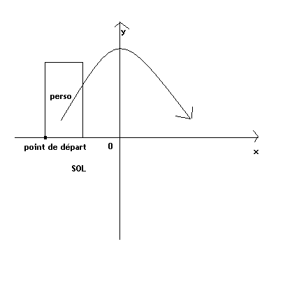
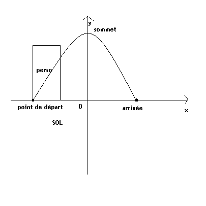
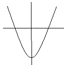
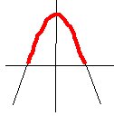
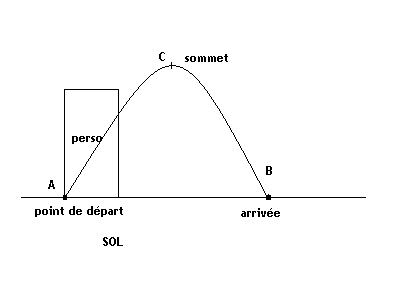
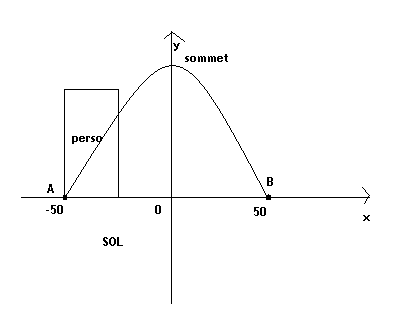
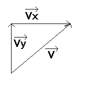
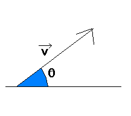

Que peuvent donc bien être les sauts en C avec la bibliothèque SDL ?
Des GoTo, des Lbl ? o_O
Nan, nan, rien de tout cela. :p Dans le forum, il y a souvent eu des questions du genre : « Comment je fais pour faire sauter mon perso ? », et très peu de réponses...

Aujourd'hui, on va donc apprendre à faire sauter vos personnages, en 3 méthodes !
Après un débat long et sanglant, bluestorm et d'autres personnes du Site du Zéro recommandent d'utiliser la troisième méthode. Je ne vous cache pas cependant que je tends plutôt vers les deux premières, ayant créé ce cours pour vous montrer les méthodes les plus rigoureuses possibles. La dernière méthode semble cependant plus acceptée dans l'idée générale, peut-être parce qu'elle est plus intuitive et que les autres méthodes paraissent plus fastidieuses. Tout ce que je peux vous conseiller est de lire les trois méthodes, et de les utiliser au cas par cas. Au fur et à mesure du tutorial, je vous expliquerai leur utilité spécifique.
Venez donc faire un saut dans mon tuto (c'est le cas de le dire) ! :D
Donc, je disais qu'il y a besoin de connaître le tuto de M@teo21 sur le langage C ; ainsi vous savez, en C, initialiser une fenêtre SDL. Notre but est, sur cette fenêtre, d'afficher un personnage qui fait un saut. Commencez par ouvrir une fenêtre :
#include <stdlib.h>
#include <SDL/SDL.h>
#include <SDL/SDL_image.h>
int main ( int argc, char** argv )
{
//Init de la SDL
SDL_Init( SDL_INIT_VIDEO );
// On crée une fenêtre
SDL_Surface* ecran = SDL_SetVideoMode(640, 480, 16,SDL_HWSURFACE|SDL_DOUBLEBUF);
// La boucle principale
int fin = 0;
while (!fin)
{
SDL_Event event;
while (SDL_PollEvent(&event))
{
switch (event.type)
{
case SDL_QUIT:
fin = 1;
break;
case SDL_KEYDOWN:
{
if (event.key.keysym.sym == SDLK_ESCAPE)
fin = 1;
break;
}
}
}
// Affichage
//On vide l'écran
SDL_FillRect(ecran, 0, SDL_MapRGB(ecran->format, 0, 0, 0));
// Fin de l'affichage
SDL_Flip(ecran);
}
SDL_Quit();
return 0;
}
Voilà : ça, c'est le plus facile. :p Qu'est-ce qu'on obtient ? Un écran noir, pas trop grand, prenant bien sûr tout l'UC à cause de la fonction SDL_PollEvent();.
Notre but sera d'afficher un personnage qui saute du sol, pour revenir jusqu'au sol. Dites bonjour à... Mario !
Téléchargez mon Mario ; il est en PNG donc il va nous falloir ajouter la bibliothèque SDL_Image. Je vous rappelle comment faire. On met un include en haut de la page :
#include <SDL/SDL_image.h>
Et pour charger notre image, il faut ajouter une fonction au début de notre code :
SDL_Surface* mario = IMG_Load("mario.png");
Maintenant qu'on a notre cher Mario, il faudrait peut-être qu'on ait un sol sur lequel il saute. Ne vous tuez pas à ça, faites simplement comme moi :
Là, c'est la partie difficile qui commence... En effet, on va faire des maths et de la physique !
Commençons avec la première méthode.
Les sauts, une question de paraboles
Tout est dans le titre. En effet, d'après les lois physiques, un objet est en chute libre si uniquement son poids travaille. Par conséquent, ayant une vitesse initiale plus ou moins grande, sa vitesse horizontale est constante, mais la vitesse verticale devient rapidement négative (dès que l'objet a atteint le plus haut point de son saut)... Ne faites pas attention à ce que je viens de vous dire si vous n'y comprenez rien. :p
En gros, un saut, c'est le mouvement d'un objet en chute libre, ce qui aura pour conséquence que la courbe de sa trajectoire est... une parabole ! Non pas un texte qui cache un enseignement moral ou religieux ( :p ), mais une courbe arrondie au-dessus qui imite les vrais sauts.
L'objet monte vite, ralentit, puis redescend lentement en accélérant. C'est donc bien une parabole.
Trouver l'équation d'une parabole
Pour définir la trajectoire du saut de l'image, il faut définir l'équation de la parabole correspondante.
Qui connaît les équations des paraboles ?
Bon, je vais vous le dire ( :) ) : une parabole a pour équation y = ax²+bx+c.
C'est là la partie fondamentale de notre saut : on connaît l'altitude de notre personnage (y) en fonction de son déplacement horizontal (x) !
Je vous montre à quoi ressemblerait cette parabole :

On va donc dessiner un repère fictif dans notre programme. o_O Je vous expliquerai ça plus en détail après. :p
On va maintenant s'occuper de trouver les coefficients a, b et c dans cette équation. En effet, si on connaît l'équation de notre parabole, on pourra donner le déplacement horizontal à notre programme pour qu'il calcule le déplacement vertical. :D Très pratique parce que cela s'appelle un saut ! :p
Trouver b
Eh oui je commence bien dans l'ordre ! :p b est le plus facile. En effet, comme on le voit sur mon schéma terrible de la mort qui tue, la courbe est symétrique par rapport à l'axe des ordonnées. Ce qui veut dire que le déplacement horizontal est nul, tout comme b.
Donc : b = 0.
Trouver c
Qui connaît la méthode pour trouver c ? C'est ce qu'on pourrait appeler l'ordonnée à l'origine. C'est en gros l'ordonnée du sommet de la parabole.
Par quoi cette ordonnée est-elle définie ?
Par la hauteur du saut, bien sûr !
Allez : de combien on fait sauter notre Mario ? 50 pixels ? 100 pixels ? Je choisirai 100 pour cet exemple, mais vous pouvez choisir plus, bien entendu.
Donc : c = 100.
Trouver a
Aïe, les choses se corsent encore. :p Où en sommes-nous, d'ailleurs ? L'équation qu'on a pour le moment est :
y = a*x²+100 (car b = 0).
De quoi peut bien dépendre a ? Je vous donne deux pistes :
si a est positif, la parabole est tournée vers le haut, et inversement ;
la parabole devient de plus en plus large quand a devient de plus en plus petit.
Pour la première info, a doit bien sûr être négatif. En effet, on ne veut pas que notre personnage tombe et remonte, mais qu'il saute et qu'il redescende.
Exemple de parabole tournée vers le haut, où a est par conséquent positif :

Et une tournée vers le bas, où a est négatif :

J'ai surligné avec mes grands talents artistiques ( :p ) la partie qui va nous intéresser. Les coordonnées négatives, c'est pas pour tout de suite. On prend donc un a négatif !
La seconde information est capitale. Une parabole devient de plus en plus large quand a se rapproche de 0... Il faudrait donc peut-être choisir un point de départ et d'arrivée. Le point de départ est le moment du saut, et le point d'arrivée, le moment de l'atterrissage.
Je choisis comme point de départ 200 px, et 301 px comme moment d'atterrissage. Pourquoi 301 ? Si j'avais choisi un nombre pair, il serait plus difficile de placer notre repère fictif. Les demi-pixels n'existent malheureusement pas... :p
Où sera donc placé notre repère fictif ?
Au point 251, bien sûr ! C'est le milieu entre 200 et 301.
Maintenant, on veut connaître les coordonnées de ces points, que j'appelle A, le point de départ, et B, le point d'arrivée. Le personnage est au sol pendant ces deux moments, non ? Dans ce cas :
A(200;300) B(301;300)
Je vous rappelle que le sol, le trait que j'ai tracé, est à 300 px du bord inférieur de notre fenêtre. :) D'où le schéma suivant, avec les coordonnées absolues :

Malheureusement, on ne peut utiliser ça pour notre parabole, car cette dernière a un autre repère que notre fenêtre (l'origine est (251;300)). Réfléchissons donc : A et B sont distants de 101 px ; l'origine est au milieu de cette distance ; par conséquent, on peut dire que B est distant de 50 px de l'origine, et A aussi. Mais A est à gauche de l'axe des ordonnées. Donc, les abscisses de A sont négatives.
Ce qui nous donne ces points relatifs :
A(-50;0) B(50;0)
D'où le second schéma, avec les coordonnées dans le repère fictif :

On met 0 en ordonnées car les ordonnées de l'origine sont identiques à celles de nos points. Il est capital d'avoir compris cette partie, n'hésitez pas à relire. ;)
Maintenant qu'on a ces nouveaux points (dont vous pouvez personnaliser les abscisses, d'ailleurs), on reconsidère notre équation :
y = a*x²+100.
On peut remplacer x et y par les coordonnées de l'un de ces points. Je choisis A ; par conséquent,
a est-il bien négatif ? Oui, donc nous pouvons continuer !
Pourquoi faire tout ça
Eh bien, parce que nous allons l'utiliser dans notre programme. Le repère choisi sera fictif, non dessiné, et ce qui sera surtout intéressant, c'est que nous allons positionner Mario selon un intervalle régulier du temps, pour créer un mouvement fluide.
Argh ( :pirate: ) pourquoi on était là, déjà ? Ah oui, pour programmer !
Mario, il est présent dans 2 repères : un fictif, et le repère de notre fenêtre. L'ennui avec le repère de notre fenêtre, c'est qu'il est inversé ; le 0 est tout en haut. On ne va pas s'embêter, on verra ça plus tard. :)
Eh oui, il y a une position que j'appelle absolue : c'est la position de Mario dans la fenêtre. La seconde position est relative : c'est la position de Mario dans notre nouveau repère.
J'ai pris les coordonnées du point A pour la première position de notre Mario ; cf. ci-dessus.
Pourquoi en faire 2 ? Eh bien, parce que la SDL ne comprend rien aux repères relatifs : lui, y a que la fenêtre ! Et nous, on ne peut pas travailler dans le repère de la fenêtre ; conséquence, on travaille autre part, et ça nous fait deux positions. :p
Ne vous inquiétez pas, elles sont liées, c'est ça le plus grand intérêt. :)
Ne nous reposons pas sur nos lauriers tout de suite ; notre Mario est toujours immobile. :p
Nous allons donc nous intéresser au code, et plus particulièrement à la partie qui suit la gestion d'évènements, la partie que j'appelle « l'évolution ».
L'évolution
Ici, on va travailler sur les coordonnées de notre Mario.
Je vous ai fait un schéma bien sympathique de là où on va travailler. On va d'abord s'intéresser au temps.
Le temps
Comme vous travaillez tous avec des ordis 4.0 GHz, le code va s'exécuter super vite. :p Vous n'aurez même pas le temps de voir votre pauvre Mario sauter... On va donc mettre un intervalle de temps régulier entre chaque affichage :
SDL_Delay(10);
SDL_Delay interrompt le programme pendant un temps exprimé en ms. L'intervalle est de 10 ms, assez petit pour qu'on voie un mouvement bien fluide. On place cette fonction à la fin du code de l'évolution.
Maintenant, on veut qu'à chaque fois que la boucle passe, Mario avance. On va d'abord s'intéresser à sa vitesse horizontale.
La vitesse horizontale
Dans une chute libre, la vitesse horizontale ne varie pas. Si vous ne savez pas ce qu'est la vitesse horizontale, sachez que tout objet a une vitesse que l'on peut décomposer en vitesse horizontale et une vitesse verticale. Sous forme de vecteurs, on obtient ça :

Conséquence : on incrémente les abscisses de notre Mario à chaque fois que la boucle passe.
Les abscisses absolues ou relatives ?
Bonne question. :) Nous travaillons dans le repère fictif, donc ce seront les abscisses relatives :
posMarioRel.x++;
Voilà pour la vitesse horizontale.
La vitesse verticale
Pour la vitesse verticale, c'est là que notre équation de parabole va venir en aide. En effet, on avait dit qu'on pouvait trouver y en fonction de x :
En C, « ² » n'existe pas, il faut donc le faire manuellement.
Voilà, nous avons géré nos variables relatives. Quant aux absolues, il faut se référer à la loi de Chasles ; si I est l'origine de notre nouvelle origine, et M un point quelconque dans le plan, on a :
Il nous reste une dernière chose à faire : à chaque passage de boucle, les variables absolues sont modifiées ; si on ne veut pas que notre Mario parte à Saint-Perpète-les-Bains ( :p ) , il faut les remettre comme elles étaient avant ; on rajoute donc :
Mon Mario commence avec la tête en dessous du sol !
C'est normal, l'origine du repère de dessin est l'angle supérieur gauche de notre surface. Pour remédier à cela, il faut enlever la hauteur de Mario aux coordonnées absolues :
Là on va voir ceux qui ont bien écouté : je l'ai dit un peu au-dessus ; le repère de la SDL est inversé. Il faut donc rajouter un « - » en ajoutant les ordonnées absolues et relatives :
Il faut remettre à zéro les variables relatives quand elles deviennent trop grandes ; rajoutez ça au début de l'évolution, juste après avoir incrémenté la valeur relative des abscisses :
if(posMarioRel.x>=50)
{
posMarioRel.x=-50;
}
Pour éviter que Mario ne s'enfonce dans le sol ! :p
Voilà : normalement, il n'y a plus d'erreurs.
Tenez, voici le code complet pour ceux qui n'ont pas écouté ( :p ) :
#include <stdlib.h>
#include <stdio.h>
#include <SDL/SDL.h>
#include <SDL/SDL_image.h>
int main ( int argc, char** argv )
{
//Init de la SDL
SDL_Init( SDL_INIT_VIDEO );
// On crée une fenêtre
SDL_Surface* ecran = SDL_SetVideoMode(640, 480, 16, SDL_HWSURFACE|SDL_DOUBLEBUF);
// On charge le fond
SDL_Surface* fond = IMG_Load("fond.png");
//On charge Mario
SDL_Surface* mario = IMG_Load("mario.png");
// La position du fond
SDL_Rect posFond;
posFond.x = 0;
posFond.y = 0;
// La position absolue de Mario
SDL_Rect posMarioAbs;
posMarioAbs.x = 200;
posMarioAbs.y = 300-(mario->h);
// La position relative de Mario
SDL_Rect posMarioRel;
posMarioRel.x = -50;
posMarioRel.y = 0;
// Boucle principale du programme
int fin = 0;
while (!fin)
{
// Gestion des evenements
SDL_Event event;
while (SDL_PollEvent(&event))
{
switch (event.type)
{
// Quand on ferme la fenetre
case SDL_QUIT:
fin = 1;
break;
// Quand on appuie sur une touche
case SDL_KEYDOWN:
{
// ECHAP
if (event.key.keysym.sym == SDLK_ESCAPE)
fin = 1;
break;
}
}
}
// EVOLUTION
//On avance de 1
posMarioRel.x++;
if(posMarioRel.x>=50)
{
posMarioRel.x=-50;
}
//On met à "0" les pos abs:
posMarioAbs.x = 200;
posMarioAbs.y = 300-(mario->h);
//On calcule la valeur relative de y:
posMarioRel.y=(-0.04*(posMarioRel.x*posMarioRel.x)+100);
//On calcule maintenant les valeurs abs
posMarioAbs.x = posMarioAbs.x + posMarioRel.x+50;
posMarioAbs.y = posMarioAbs.y - posMarioRel.y;
//Intervalle de 10ms
SDL_Delay(10);
// FIN EVOLUTION
// DESSIN
// On vide l'ecran
SDL_FillRect(ecran, 0, SDL_MapRGB(ecran->format, 0, 0, 0));
// On dessine les images aux positions respectives
SDL_BlitSurface(fond, 0, ecran, &posFond);
SDL_BlitSurface(mario, 0, ecran, &posMarioAbs);
// FIN DESSIN
// Et on oublie pas de rafraichir l'image !
SDL_Flip(ecran);
}
// Soulageons la memoire !
SDL_FreeSurface(fond);
SDL_FreeSurface(mario);
SDL_Quit();
return 0;
}
Oui, vous devez sûrement tous penser ça. :p Voilà pourquoi je vous présente maintenant une seconde méthode... plus compliquée, plus déroutante, plus sanglante, plus horrible que jamais... :pirate: J'ai nommé... les courbes paramétriques ! :pirate:
Un poil plus dure que la précédente ( :D ), cette méthode relève du programme de physique de terminale S.
À quoi ça sert de faire encore plus compliqué ?
^^ À obtenir des sauts réalistes, bien sûr ! En effet, les paraboles permettent parfois de faire... trop de choses. Je m'explique : on peut, avec la méthode précédente, faire sauter Mario de 200 px vers la droite, en ne l'élevant au total que de 1 px ; c'est complètement contre les lois de la nature ! Ou plutôt, les lois de Newton... :p Donc si vous n'avez pas envie de tâter pour chercher une solution, cette méthode est pour vous !
La seconde loi de Newton
Je ne vous la citerai pas ici, elle est trop barbare, elle va sûrement vous faire peur et vous décourager pour le QCM. :p Sachez simplement que l'on se base dessus pour le reste du tutoriel, car le saut que l'on va programmer a une vitesse non rectiligne ni uniforme.
Le principe de cette méthode est bien plus réaliste, car elle permet de s'adapter à des situations plus « réalistes » qu'avec la méthode précédente. En effet, imaginez que votre perso coure avec une vitesse initiale V et qu'il saute... Comment reproduire ça avec une parabole ?!? o_O
J'ai déjà révélé le premier paramètre de notre saut : la vitesse initiale ; maintenant, si je vous annonçais qu'on peut programmer un saut uniquement avec l'angle de saut et cette vitesse initiale ? Si, si ! :D
En gros, le début du saut sera comme ceci :

L'angle initial de saut est bien sûr dans le sens direct, par convention opposé aux aiguilles d'une montre. :D
Il va maintenant falloir appliquer ces deux paramètres à notre saut. Commençons par les vitesses horizontale et verticale.
Décomposer la vitesse, et en déduire la trajectoire
Notre but est d'abord de trouver la vitesse horizontale Vx puis la vitesse verticale Vy. Les accros de la trigo verront vite que l'on peut établir ces relations :
Continuons d'innover ; en effet, nous allons utiliser ici les axes paramétriques !
En gros, y ne dépend plus de x. o_O
Eh oui ! À partir de maintenant, y dépend de t, et x aussi.
t ?!?! Qu'est-ce que c'est que ça ?
« Ça » c'est tout simplement notre intervalle de temps régulier que l'on retrouve ici. « t » est l'instant où y vaudra tant, et où x vaudra tant. Pour nous programmeurs, t est l'instant où on blittera notre image à une abscisse donnée et une ordonnée donnée. Or, avec notre SDL_Delay();, les instants deviennent virtuels. En effet, si on met un délai de 10 ms, toutes les 10 ms notre image sera affichée à nouveau. Ainsi, t = 0 est l'instant donné où Mario n'a pas encore quitté le sol, et pour nous ça correspond peut-être au 1er passage de boucle.
Reprenons. :) Maintenant que nous avons calculé les vitesses, intéressons-nous à la trajectoire. De quoi dépend-elle exactement ? On vient de dire qu'elle dépendait de l'instant où on procède à l'affichage, et des vitesses horizontale et verticale ! En fait, on peut dire que :
Pour la vitesse horizontale, on retrouve bien nos paramètres. x(t) veut dire : « x à l'instant t ». Mais pour la position verticale ? Ce serait une erreur d'exprimer y de la même façon que x, car on obtiendrait en fin de compte... une fonction linéaire, c'est-à-dire, une droite. :( Notre Mario irait droit dans le ciel ! :p Or nous recherchons une parabole, il nous faut donc des x².
Mais, tu ne nous avais pas dit que y ne dépendait plus de x ?
C'est là la réponse au sujet. En effet, il faut en fait enlever à chaque instant quelques pixels de notre position verticale, à la façon d'une parabole mais par rapport à la constante gravitationnelle. D'où la formule complexe ci-dessus.
Ne vous posez pas trop de questions si vous ne comprenez pas. Dites-vous simplement que l'on retrouve dans ce calcul :
la vitesse verticale Vy ;
l'instant t par rapport à la vitesse verticale ;
la constante gravitationnelle g. Sur Terre, elle vaut 9,81 N/kg environ ;
encore une fois l'instant t par rapport à la constante gravitationnelle, et au carré pour bien confirmer que la trajectoire est une parabole.
Voilà. :) Votre Mario est prêt à être lancé. :p Passons donc à la programmation.
Ce que ça donne en C
Résumons ce qu'il faut faire. :)
Les variables
Il y a plus de variables à définir que chez les paraboles. Tout d'abord, il y a la constante gravitationnelle, qui fera « l'effet poids » :
const double g = 9.81;
const double pi = 3.14;
Vous noterez que j'ai défini pi dans le code. Vous verrez après pourquoi.
Puis, on définit un instant t que l'on initialise à 0 :
int t = 0;
Enfin, on établit les paramètres initiaux de notre saut. Cependant, l'angle initial s'exprime en radians ! D'après mon magnifique cercle trigonométrique...
Image
... choisissons un angle potable ! On va choisir ici un angle de 60°, ce qui correspond à ...
int v_init = 2;
int angle_init = pi/3;
On peut ainsi tout de suite calculer nos vitesses horizontale et verticale :
Ça fait une expression barbare, je l'admets. :p J'ai ajouté un convertisseur en entiers devant, car la fonction cosinus et la fonction sinus, à partir desquelles sont calculées les décompositions de la vitesse initiale, sont loin de donner un résultat toujours entier. Or, notre compilateur risque de nous insulter poliment si on donne un nombre décimal à une variable censée contenir un nombre entier. D'où le (int), ayant le même effet qu'une troncature. Vous pouvez vous amuser à trouver la fonction pour arrondir si jamais vous avez besoin d'avoir des résultats précis. :D
De plus, ici, ce n'est plus gt²/2 mais gt²/2000. o_O En effet, t est exprimé en ms, et nous on veut un résultat en secondes, d'où la division supplémentaire par mille.
Et pour remettre à 0 notre position de Mario, tapez ceci :
if((posMarioAbs.y)>=(300))
{
t=0;
}
Je vous rappelle que tout dépend de t ici ! :)
Cette fois, il ne devrait pas y avoir d'erreurs... :p
Le code complet
#include <stdlib.h>
#include <stdio.h>
#include <math.h>
#include <SDL/SDL.h>
#include <SDL/SDL_image.h>
int main ( int argc, char** argv )
{
//Init de la SDL
SDL_Init( SDL_INIT_VIDEO );
// On crée une fenêtre
SDL_Surface* ecran = SDL_SetVideoMode(640, 480, 16, SDL_HWSURFACE|SDL_DOUBLEBUF);
// On charge le fond
SDL_Surface* fond = IMG_Load("fond.png");
//On charge Mario
SDL_Surface* mario = IMG_Load("mario.png");
// La position du fond
SDL_Rect posFond;
posFond.x = 0;
posFond.y = 0;
// La position absolue de Mario
SDL_Rect posMarioAbs;
posMarioAbs.x = 200;
posMarioAbs.y = 300-(mario->h);
// La position relative de Mario
SDL_Rect posMarioRel;
posMarioRel.x = 0;
posMarioRel.y = 0;
//Variables méthode 2:
const double g = 9.81;
const double pi = 3.14;
int v_init = 2;
int angle_init = pi/3;
int t = 0;
double v_x = cos(angle_init)*v_init;
double v_y = sin(angle_init)*v_init;
// Boucle principale
int fin = 0;
while (!fin)
{
// Gestion des evenements
SDL_Event event;
while (SDL_PollEvent(&event))
{
switch (event.type)
{
case SDL_QUIT:
fin = 1;
break;
case SDL_KEYDOWN:
{
// ECHAP
if (event.key.keysym.sym == SDLK_ESCAPE)
fin = 1;
break;
}
}
}
// EVOLUTION
//On met à "0" les pos abs:
posMarioAbs.x = 200;
posMarioAbs.y = 300-(mario->h);
//On calcule la valeur relative de y:
posMarioRel.x=(int)(v_x*t);
posMarioRel.y=(int)((v_y*t)-((g*t*t)/2000));
//On calcule maintenant les valeurs absolues
posMarioAbs.x = posMarioAbs.x + posMarioRel.x;
posMarioAbs.y = posMarioAbs.y - posMarioRel.y;
//Intervalle de 10ms
t+=10;
// FIN EVOLUTION
//Avec en bonus une petite mise a 0 des coordonnees lorsque mario s'en va trop loin :)
if((posMarioAbs.y+(mario->h))<=(100))
{
t=0;
}
// DESSIN
// Effacement de l'ecran
SDL_FillRect(ecran, 0, SDL_MapRGB(ecran->format, 0, 0, 0));
// Dessin des images
SDL_BlitSurface(fond, 0, ecran, &posFond);
SDL_BlitSurface(mario, 0, ecran, &posMarioAbs);
// FIN DESSIN
// Et n'oublions pas...
SDL_Flip(ecran);
}
// Et on soulage la mémoire !
SDL_FreeSurface(fond);
SDL_FreeSurface(mario);
SDL_Quit();
return 0;
}
Conséquence
On obtient une parabole. Vous me direz, une parabole peut s'écrire de la façon y = ax²+bx+c. Eh bien, je vous annonce un scoop : d'après la formule hyper-compliquée ci-dessus, on peut en tirer une équation de parabole ! Je ne le démontrerai pas ici ( ^^ ) , mais ça donne :
Normalement il y a un « + h » à la fin de cette équation de suicidaire. :p h correspondrait à c dans une équation parabolique. Ainsi, h = 0 car nous sommes toujours dans les coordonnées relatives. Têta correspond à notre angle initial. Si vous remplacez la parabole dans la méthode 1 ci-dessus par cette équation, vous donnez en fait à votre ordinateur l'équation suivante :
Normalement je n'ai pas oublié de parenthèses. :D Il faut avouer que cette méthode est vraiment barbare. Mais si vous calculez a, b et c auparavant, cela ne devrait pas trop poser de problèmes à l'ordinateur de les calculer de nouveau lorsque vous voulez adapter la parabole à vos rêves les plus fous. :p
Passons maintenant à une nouvelle méthode pleine de mystères...
Les méthodes présentées ci-dessus peuvent sembler inadaptées pour beacoup d'entre vous. Après une discussion sur le forum, il a semblé nécessaire de vous faire connaître une approche plus intuitive.
Dans quels cas les méthodes ci-dessus sont-elles inadaptées ?
L'argument principal est la difficulté du code observé. En effet, les calculs ne sont pas forcément simples, ils sont longs et fastidieux ; et pensez-vous vraiment que les développeurs de SuperMario Land ont travaillé avec des paraboles ?
Donc il ne nous servait à rien de savoir tout ça ?
Comme je l'ai dit dans l'introduction, il faut faire au cas par cas. Dans un jeu que l'on veut le plus réaliste possible (avec des éléments de ballistique), ou encore dans des simulations, il faudra indéniablement utiliser les lois de Newton. Quand on veut pré-établir le point d'arrivée de l'objet qui saute, une parabole devient alors plus utile.
La méthode que je vais vous présenter, et on ne peut le nier (hum hum :ange: ) est approximative. Voyez ci-dessous pour ce que ça veut dire.
D'où la nécessité d'une nouvelle méthode
Les programmeurs sont paresseux de nature :D . On a donc imaginé un système qui imiterait la parabole dans un saut. Le rendu est parfait : on dirait vraiment une parabole.
Il y a deux problèmes mineurs dans cette méthode :
On ne peut pas prévoir où le personnage va retomber (c'est possible et facile avec les deux méthodes précédentes), d'où le fait que j'ai dit qu'elle était approximative ;
Cette méthode ne s'obtient qu'en tâtonnant. o_O En gros on essaie jusqu'à ce que ça marche. Ne vous attendez donc pas à vous mettre devant l'ordinateur, taper votre code, et obtenir un saut après la compilation (bon, ici je vous prémâche les paramètres). Vous devrez d'abord essayer une série de paramètres, voir ce que ça donne, une autre série si c'est pas bon, et ainsi de suite. Il n'y a vraiment aucun moyen facile de savoir à l'avance le comportement exact de l'image qui devra bouger.
Il y a cependant aussi un problème majeur :colere2:. Vous verrez que toute variable introduite dans cette partie sera prédéfinie. En gros, si vous avez 5 sauts différents dans votre jeu, vous allez être obligé, avant de compiler, de définir tous les paramètres des 5 sauts ! Contrairement à la méthode des paraboles, ou la méthode des lois de Newton, où vous pouvez (et c'est recommandé) trouver toutes les variables en temps réel. dans ces-méthodes-là, vous pouvez demander à votre ordinateur de trouver les paramètres pour vous. Ca vous évite de réfléchir trop à l'avance :p
Ainsi, en fait, on perd du temps dans tous les cas. L'avantage, c'est que je vous prémâche le travail : je vous offre les données de la méthode, déjà trouvées auparavant.
La-dite méthode
Je vais maintenant vous poser une question qui peut sembler bête. Quel est l'avantage que les programmeurs ont sur les physiciens et les mathématiciens ? Voici la réponse :
On peut utiliser plein de variables !
Et oui, les mathématiciens, eux, ils font tout en fonction d'une variable (généralement...) ce qui leur donne des formules pharaoniques (comme ci-dessus :p ). Dans cette méthode, nous n'allons pas nous limiter à des x et des y, bien au contraire.
Reprenez donc vos codes de base et créez 4 petites variables :
Dans mon cas, mon saut va dépendre de 5 éléments :
v_x, vous l'aurez deviné, il s'agit de la vitesse horizontale. Bien évidemment, au début pour le moins, celle-ci sera constante.
v_y est la vitesse verticale. Celle-ci va influencer la position en ordonnées de l'image. C'est donc sur cette vitesse que nous allons concentrer les variations.
À l'état initial, la vitesse verticale sera égale à v_saut. En effet, pour une fois, nous allons commencer avec mario, déjà en train de sauter, qui retombe.
Et les variations de la vitesse verticale résultent de la variable v_grav, qui va progressivement atténuer cette chute.
Pour l'instant, suivez-moi, même si vous n'avez pas bien compris. On va d'abord donner une valeur à nos variables :
À l'état initial, Mario est au sol. Sa vitesse horizontale restera toujours fixe. Sa vitesse verticale, quant à elle, est négative. Ceci est bien logique puisque notre Mario doit monter ! N'oublions pas que notre cher repère SDL voit tout à l'envers !
Lorsque Mario est en train de monter, sa vitesse verticale augmente. Je dis bien augmente puisqu'elle va se rapprocher de 0 alors qu'elle est négative. Comment peut-on bien la faire rapprocher progressivement de 0 ? Grâce à v_grav ! Ainsi à chaque tour de boucle, on ajoute v_grav à la vitesse verticale.
Lorsque Mario atteint une vitesse verticale nulle, on dira qu'il est au sommet de sa trajectoire. Pour retomber, on continue à augmenter la valeur de v_y avec v_grav. Mario va alors progressivement descendre.
Le code complet
D'où le code suivant :
#include <stdlib.h>
#include <stdio.h>
#include <math.h>
#include <SDL/SDL.h>
#include <SDL/SDL_image.h>
int main ( int argc, char** argv )
{
//Init de la SDL
SDL_Init( SDL_INIT_VIDEO );
// On crée une fenêtre
SDL_Surface* ecran = SDL_SetVideoMode(640, 480, 16, SDL_HWSURFACE|SDL_DOUBLEBUF);
// On charge le fond
SDL_Surface* fond = IMG_Load("fond.png");
//On charge Mario
SDL_Surface* mario = IMG_Load("mario.png");
// La position du fond
SDL_Rect posFond;
posFond.x = 0;
posFond.y = 0;
// La position de Mario
SDL_Rect posMario;
posMario.x = 100;
posMario.y = 300-(mario->h);
// Les variables de la troisieme methode
double v_x = 1.5;
double v_grav = 0.08;
double v_saut = -4;
double v_y = v_saut;
// Boucle principale
int fin = 0;
while (!fin)
{
// Gestion des evenements
SDL_Event event;
while (SDL_PollEvent(&event))
{
switch (event.type)
{
case SDL_QUIT:
fin = 1;
break;
case SDL_KEYDOWN:
{
// ECHAP
if (event.key.keysym.sym == SDLK_ESCAPE)
fin = 1;
break;
}
}
}
// EVOLUTION
// Evolution des positions : vive la rigueur !
posMario.x += v_x;
posMario.y += v_y;
// evolution de la vitesse verticale
v_y += v_grav;
// POINT A
// FIN EVOLUTION
// DESSIN
// Effacement de l'ecran
SDL_FillRect(ecran, 0, SDL_MapRGB(ecran->format, 0, 0, 0));
// Dessin des images
SDL_BlitSurface(fond, 0, ecran, &posFond);
SDL_BlitSurface(mario, 0, ecran, &posMario);
// FIN DESSIN
// Et n'oublions pas...
SDL_Flip(ecran);
}
// Et on soulage la mémoire !
SDL_FreeSurface(fond);
SDL_FreeSurface(mario);
SDL_Quit();
return 0;
}
De l'amélioration
Vous l'aurez vu en lançant le programme, Mario saute, tombe et... s'enfonce inévitablement dans les profondeurs abyssales de votre écran d'ordinateur ! o_O Une simple gestion des collisions permet d'éviter ce problème. J'ai spécifié dans le code un POINT A. Vous n'aurez qu'à remplacer cette ligne avec le code suivant :
if (posMario.y > 300)
v_y = v_saut;
Sagement Mario va maintenant recommencer à sauter bien trois fois avant de sortir de votre écran par la droite. :p Je vous conseille donc de remédier à cela avec une petite gestion des collisions en abscisses.
Ceci répond à vos questions ? :D
Vous pouvez maintenant faire sauter vos personnages avec trois méthodes différentes - mathématique, physique et logique. N'oubliez pas que vous pouvez les appliquer à quelconque objet qui bouge sur votre écran : un projectile, un simple saut de personnage et même un curseur, avec un peu d'imagination ! Si, si !
Ceci est en fait un grand pas dans la programmation de jeux, car :
vous pouvez vous servir de ces méthodes en 3D ;
les sauts dans les jeux de plates-formes, par exemple, sont nombreux, variables et très importants ;
le code ci-dessus est réadaptable lui-même pour d'autres langages qui vous semblent bien plus pratiques que le C, ou alors dans une autre bibliothèque que la SDL, qui est lente ;
dans la deuxième méthode, si vous êtes fin mathématicien, vous pouvez trouver les équations horaires en incluant les frottements ! de quoi faire une simulation sans erreurs !
J'espère donc, qu'en fin de compte, vous avez compris ce que je vous ai expliqué, et que vous saurez le réutiliser dans tous les cas possibles et imaginables. N'hésitez pas à m'envoyer un MP si jamais erreur il y a. ;)